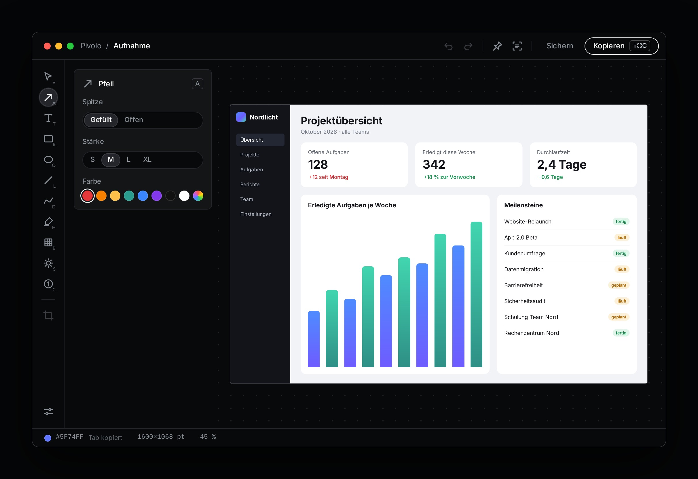

Version 0.4.1 · macOS und Windows
Bildschirmfotos. Klar erklärt.
Kürzel drücken, Bereich ziehen, Pfeil setzen, Esc – und das Bild liegt in der Zwischenablage. Pivolo lebt in der Menüleiste und ist da, wenn du es brauchst.

Alles, was ein Bildschirmfoto braucht
Aufnehmen, erklären, teilen – in einem Fenster und mit der Tastatur.
Bildschirmaufnahme Neu
Bereich aufziehen, auf Start klicken, mit Stopp beenden – fertig ist ein scharfes MP4 in Retina-Auflösung. Rahmen und Leiste bleiben aus dem Video. Ab macOS 15 und unter Windows 10/11.
Jede Art von Aufnahme
Vollbild, Bereich mit Lupe für pixelgenaues Ansetzen, Fenster per Klick samt Schatten, aktives Fenster und „Bereich wiederholen“ für Vorher/Nachher.
Markieren in Sekunden
Pfeile, Rahmen, Ovale, Linien, Freihand, Text und Etiketten. Jedes Werkzeug hat eine eigene Taste – A für Pfeil, R für Rechteck.
Persönliches unkenntlich
Namen, E-Mail-Adressen oder Passwörter verpixeln oder weichzeichnen, bevor das Bild jemand anderes sieht.
Schritte nummerieren
Zähler setzen sich von selbst fort: 1, 2, 3. Dazu Spotlight, das alles außer dem Wichtigen abdunkelt, und ein Textmarker.
Text und QR-Codes
Bereich wählen, Text ist kopiert. Funktioniert mit Fehlermeldungen, Videos, PDFs und QR-Codes – erkannt direkt auf dem Mac.
Anpinnen
Ein Bild schwebt über allen Fenstern – zum Abtippen, Vergleichen oder als Spickzettel. 50, 100 oder 200 %, auf Wunsch halbtransparent.
Farben aufnehmen
Die Farbe unter dem Mauszeiger steht immer unten links in der Statuszeile. Tab kopiert sie als HEX, RGB, CSS oder OKLCH.
Klug speichern
Oberflächen als PNG, Fotos als JPEG – automatisch. Retina-Bilder auf Wunsch in Originalgröße, Dateinamen mit Datum und Uhrzeit.
Bildschirmvideos
Wähle einen Bereich und nimm ein MP4 in Retina-Auflösung auf – ohne Rahmen oder Steuerleiste im Bild.
Direkt in T3 Code
Füge einen ausgewählten Bildschirmbereich als Anhang in den offenen T3-Code-Chat ein. Gesendet wird nichts.
Deine Kürzel
Alle Aufnahmen auf Tasten, die zu dir passen – auch ⇧⌘4, wenn du die Systemkürzel abschaltest.
In wenigen Schritten startklar
Installation, Freigaben und die ersten Aufnahmen – Schritt für Schritt im Handbuch. macOS und Windows unterscheiden sich bei Berechtigungen und Tastenkürzeln.
Einstellen, wie du arbeitest
Speicherort, Format, was nach der Aufnahme passiert und jedes Kürzel – erreichbar über das Menüleisten-Symbol oder ⌘,.


Die wichtigsten Kürzel
Überall
- ⇧⌘1
- Vollbild aufnehmen
- ⇧⌘2
- Bereich aufnehmen
- ⌃⌥⌘O
- Text oder QR-Code erkennen
- ⌃⌥⌘R
- Bildschirmaufnahme starten und beenden
Weitere Aufnahmen – Fenster, aktives Fenster, Bereich wiederholen – belegst du in den Einstellungen.
Im Editor
- Esc
- Kopieren und schließen
- ⌘S
- Sichern
- ⌘P
- Anpinnen
- ⇧⌘T
- Text erkennen
- Enter
- Auf Auswahl zuschneiden
- Tab
- Farbe unter dem Mauszeiger kopieren
- ⌘0 ⌘1
- 100 % · Einpassen
Fragen
Schickt Pivolo Daten ins Internet?
Aufnahmen, Texterkennung und Einstellungen bleiben auf deinem Gerät. Es gibt keine Konten, keine Statistiken und keine Cloud. Die einzige Verbindung ist die Suche nach Updates: Pivolo ruft dafür eine kleine Versionsdatei von github.com ab. Du kannst sie in den Einstellungen abschalten.
Was ist unter Windows anders?
Die Kürzel nutzen Strg statt ⌘, also Strg+Umschalt+1 für Vollbild und Strg+Umschalt+2 für einen Bereich. Pivolo sitzt im Infobereich der Taskleiste statt in der Menüleiste. Eine Freigabe für die Bildschirmaufnahme braucht Windows nicht. Die Texterkennung nutzt die Sprachen, die in Windows installiert sind.
Warum fragt macOS nach der Bildschirmaufnahme?
macOS schützt den Bildschirminhalt vor Apps. Ohne Freigabe sähe Pivolo nur den Schreibtischhintergrund. Die Freigabe gibst du einmal unter Datenschutz & Sicherheit → Bildschirm- & Systemaudioaufnahme.
Der Hinweis zur Bildschirmaufnahme kommt immer wieder.
Entferne Pivolo in der Liste mit „−“, erlaube es neu und starte
Pivolo neu. Alternativ im Terminal:
tccutil reset ScreenCapture de.villalife.pivolo
Ein Kürzel reagiert nicht.
Eine andere App nutzt dieselbe Kombination. Pivolo meldet das in den Einstellungen unter den Kürzeln – wähl dort eine andere Kombination.
Ich sehe das Symbol in der Menüleiste nicht.
Bei vielen Symbolen blendet macOS manche hinter der Kamera-Aussparung aus. Die Kürzel funktionieren trotzdem; schaff in der Menüleiste Platz oder nutze ein Tool zum Sortieren der Menüleiste.